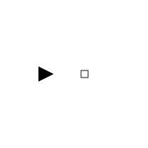
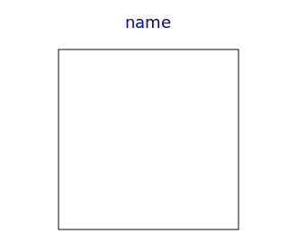

Connectors and partial models
| Name | Description |
|---|---|
| Input port of a step | |
| Output port of a step | |
| Input port of a transition | |
| Output port of a transition | |
| Input port of a step (used for resume connector of a CompositeStep) | |
| Output port of a step (used for suspend connector of a CompositeStep) | |
| Communication port between a CompositeStep and the ordinary steps within the CompositeStep (suspend/resume are inputs) | |
| Communication port between a CompositeStep and the ordinary steps within the CompositeStep (suspend/resume are outputs) | |
| Partial step with one input and one output transition port | |
|  PartialTransition | Partial transition with input and output connections |
|  PartialStateGraphIcon | Icon for a StateGraph object |
| Communication channel between CompositeSteps and steps in the CompositeStep |